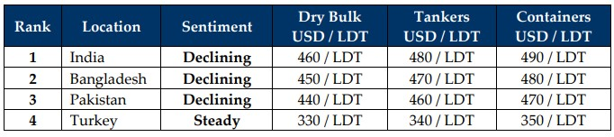

inWeekly Demolition Reports04/11/2024

Despite last week’s seemingly political response whereby Iranian leaders downplayed the extent of the IDF’s air assault against Iranian militaryinstallations and the Supreme Leader called for a restraining of excursions on all sides in order to give peace a chance, this week, it would seem that upon realizing the real extent of the damage and that several secretive installations were destroyed by the Israelis, Iran has now called upon a new and imminent counterattack against Israel whilst Israel continues to strike Gaza, Beirut, as well as Southern Lebanon where Hezbollah strongholds reportedly still exist. Amidst the ongoing back and forth, we continue to see the tragic deaths of the innocent as Israel and the Americans are increasingly called on to curtail the violence, yet the United States readies for further incursions as it repositions a collection of B2 Bomber Strike Groups to the area should the Iranian regime and its proxies decide to collectively strike Israel. As tensions rise on the back of news of American & British Special Forces being on the ground across various regions in the Middle East, oil continues to drop as Iran (one of the 4 members of OPEC) is scheduled to output a far lower 1.5 million barrels / day through 2024, down from 4 million barrels / day through 2023, further pushing oil prices down 3% (to $69.49/Barrel).
As oil and even the overall Baltic Exchange’s main sea index fell further this week (about 1.6%), the increasing supply in tonnage is regrettably being met by further disappointment as ship recycling prices fell across the board and have remained subdued through the week, greeting any sales that are being concluded at numbers now dropping towards the mid USD 400s/LDT, with some facing even lower indications on account of their poorer overall conditions. Post-monsoon too has unsurprisingly bought little respite to ease the instability in the markets that many had been hoping would’ve been a lot more stable, and it is clear that the markets have now lost well over USD 100/LDT on levels since the peaks seen over the year, where a container was sold above the highly coveted USD 600/LDT mark into Bangladesh.
Cheap Chinese product also continues to stifle steel industries in both Pakistan and India despite restrictive tariffs being set into place. Moreover, as Pakistan’s economy continues to crumble amidst IMF loan hurdles, dithering foreign currency reserves, and reports of mismanagement of funds, both India and (especially) Pakistan are unable to prevent the continued dumping of underpriced Chinese billets into their respective markets. The pending outcome of the tightly fought U.S. elections will be known by November 05th and will not only dictate the future of geo-political events for the next four years, but has already seen the U.S. Dollar undertake mixed performances across ship recycling nation currencies that reported no movements in some and declines in the others. Consequently, end buyers remain logically reticent to commit at these present lower levels even now, rightly fearing inevitable market instabilities as plates continue to dance around.
It is therefore a bleak outlook across all ship recycling markets at present, and with supply only expected to increase going into the new year on the back of freight markets (particularly dry bulk) cooling off, all will be wondering where recycling prices find their bottom and what prices will result in all parties getting back to the bidding tables again.
For Week 44 of 2024, GMS Market Rankings / vessel indications are as below.

📄 Download PDF: Ship-recycling-market-insight-Week-44-11-01-2024-Bleak_Times.pdfSource: GMS,Inc.https://www.gmsinc.net/gms_new/index.php/web